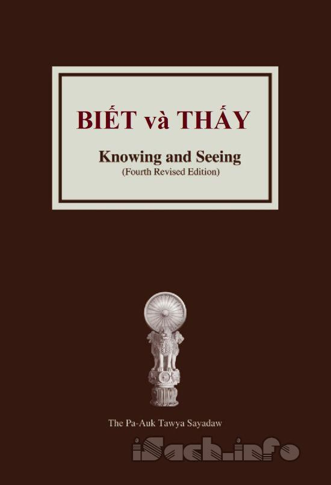

« Back
Biết Và Thấy
By Thiền Sư Pa-Auk Tawya Sayadaw

Giới Thiệu.
Bài Pháp Thoại 1:Làm Thế Nào Để Tu Tập Niệm Hơi Thở Đạt Đến An Chỉ Định.
Bài Pháp Thoại 2 Hành Giả Tu Tập An Chỉ Định Trên Các Đề Mục Thiền Khác Như Thế Nào.
Bài Pháp Thoại 3 Tu Tập Bốn Phạm Trú Và Bốn Thiền Bảo Hộ.
Bài Pháp Thoại 4 :Làm Thế Nào Để Phân Biệt Sắc.
Bài Pháp Thoại 5 :Phân Biệt Danh.
Bài Pháp Thoại 6: Làm Thế Nào Để Thấy Những Mắc Xích Của Duyên Khởi.
Bài Pháp Thoại 7: Tu Tập Các Tuệ Minh Sát Như Thế Nào Để Thấy Niết:Bàn.
Bài Pháp Thoại 8 :Những Ước Nguyện Của Đức Phật Cho Các Hàng Đệ Tử Và Giáo Pháp Của Ngài.
Bài Pháp Thoại 9: Loại Cúng Dường Cao Thượng Nhất.